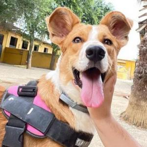

Refugio Kahu

Un poco sobre nosotros...
Nuestro refugio funciona hace 10 años y el principal objetivo es proteger a los animales abandonados, perdidos o maltratados. Contamos con el trabajo voluntario de personas de gran corazon y buscamos que nuestros protegidos encuentren un hogar donde les brinden el amor que se merecen.



Estamos siempre disponibles para ayudar a nuestra comunidad, no dudes en contactarnos